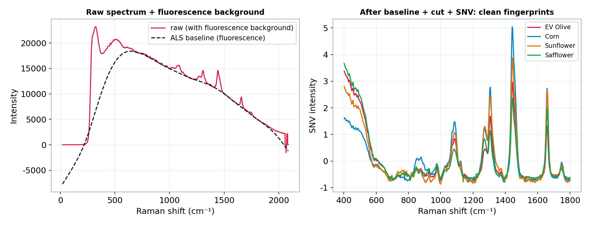
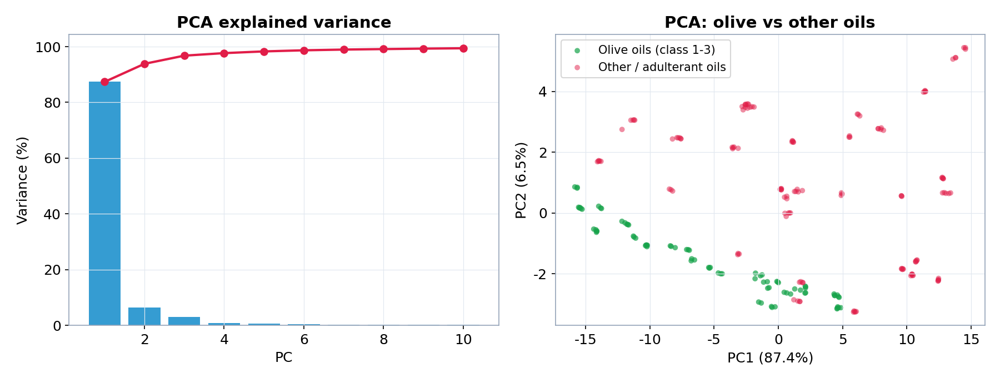
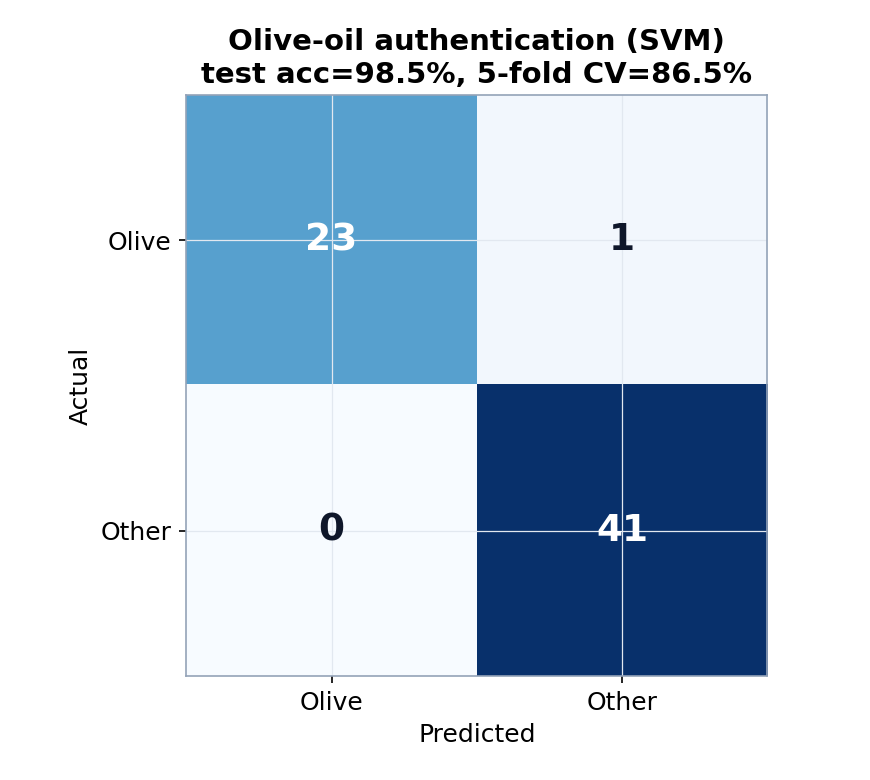
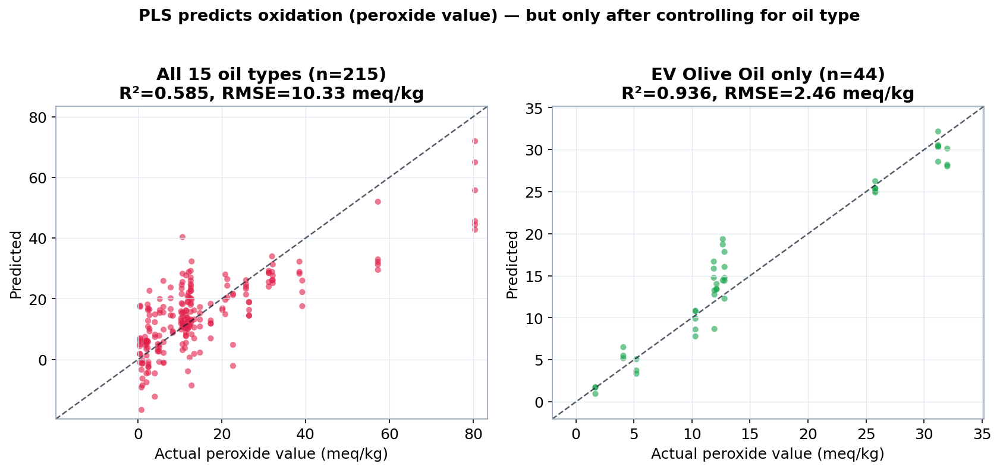

水不干擾 + 透包裝掃描
拉曼光譜（Raman Spectroscopy）量測分子的非彈性散射，得到化學鍵振動形成的「分子指紋」。 和紅外光譜（FTIR）相比，它有兩個對食品分析特別關鍵的優勢：水幾乎不干擾、雷射能穿透透明包裝——讓食品在不開封、不前處理的情況下直接量測。
水不干擾
水的 O–H 振動極化率變化極小，散射截面比多數有機官能基低 3~5 個數量級，水溶液可直接分析。透包裝測量
785／1064 nm 雷射可穿透 PET、玻璃、PE，散射光同一物鏡採集，不需開封。但是…
複雜食品（橄欖油、蜂蜜、香料）含高螢光有機物，可能把 Raman 訊號完全蓋過——這是拉曼的主要罩門。| 特性 | FTIR | 拉曼 Raman |
|---|---|---|
| 水分子干擾 | ⚠ 強烈吸收（OH 3400 cm⁻¹ 蓋訊號） | ✓ 幾乎不干擾 |
| 透包裝測量 | ✗ 紅外線被多數材料吸收 | ✓ 可穿透塑膠／玻璃 |
| 樣品前處理 | 通常需要（乾燥、壓片） | ✓ 液體／固體／粉末直接測 |
| 螢光干擾 | ✓ 不受影響 | ⚠ 有機物螢光可蓋過訊號 |
| 靈敏度 | 中等 | 中等（SERS 後 10⁷~10¹⁴×↑） |
來源：PMC10707828（2023 peer-reviewed review）。
每個分子的唯一指紋從哪來
入射光子打到分子，絕大多數彈性散射（Rayleigh，波長不變）；極少數（約 1/10⁷）把能量交給分子振動而發生非彈性散射。 散射光能量減少的部分稱為 Stokes Raman，其能量差正好等於某個化學鍵的振動能量——於是一張光譜就是一組分子結構指紋。
| 散射類型 | 能量變化 | 相對強度 |
|---|---|---|
| Rayleigh（彈性） | 無（同波長） | ~ 1 |
| Stokes Raman | 損失（紅移） | ~ 10⁻⁷ |
| Anti-Stokes Raman | 獲得（藍移） | ≪ 10⁻⁷ |
熱點把訊號放大 10⁷ ~ 10¹⁴ 倍
天然 Raman 訊號太弱，難以偵測微量成分。把分析物吸附到奈米金屬顆粒之間的「熱點」(hot spot) 間隙， 局部電磁場劇烈集中，可把訊號放大 7 到 14 個數量級——這就是表面增強拉曼（Surface-Enhanced Raman Spectroscopy）。
常用奈米基板
- AgNP / 奈米星：增強最強，但易氧化
- AuNP / 奈米棒：化學穩定、生物相容
- Au-Ag 雙金屬：結合兩者，近年主流
RSD 重現性警示
銀奈米星基板 spot-to-spot 相對標準偏差高達 7–27%（20 測點），熱點分布不均是核心瓶頸。機制拆解
- 電磁增強 EF ≈ 10¹⁰~10¹¹（主要）
- 化學增強 EF ≈ 10¹~10²（次要）
- 兩者相乘 → 總 EF 10⁷~10¹⁴
來源：PMC11989198（2025）· S0924224425001311（Trends Food Sci Technol, 2025）· PMC10820608（MDPI Sensors, 2024）。
四大食品安全應用域
MDPI Nanomaterials 的系統性綜述（PMC11547707, 2024）把奈米材料 SERS 在食品安全的應用整理成四個明確分類。 每個域都有亮眼的偵測下限，但也都附帶一個共同的提醒：多數數字是在純溶液中測得的。
① 生化汙染物
- 農藥 imidacloprid LOD 9.4×10⁻⁸ mg/mL
- 黴菌毒素 DON 0.053 fg/mL
- 重金屬離子（汞、鉛）
⚠ 多數 LOD 在緩衝液測得，食品基質會顯著降低表現。
② 食源性病原菌
- Raman + LDA 鑑別 E. coli、S. aureus
- LDA 驗證準確率 95.65%
- PCA 可分群多種菌
⚠ 僅純培養驗證；食品基質中尚未確立。
③ 食品鑑別／品管
- 橄欖油摻假 R²=0.984（vs 大豆油）
- 酪梨油 vs 芥花油 R²=0.910
- 蜂蜜來源、酒類品管
光譜差異越大 → 模型越準。
④ 包材安全
- 透包裝偵測遷移汙染物
- 不開封分析接觸面
- 冷鏈中包材完整性
最能發揮「透包裝掃描」優勢的應用。
農藥 5000× EU 標準；橄欖油摻假 R²=0.984
兩個最具代表性的定量成果：SERS 對單一農藥的偵測下限比歐盟最高殘留限量靈敏約五千倍； 而拉曼配上脊迴歸（Ridge Regression），對食用油摻假的解釋力可達 R²=0.984。
🌿 農藥殘留（SERS 銀奈米星）
| EU MRL | SERS LOD |
|---|---|
| 5×10⁻⁴ mg/mL | 9.4×10⁻⁸ mg/mL |
比 EU MRL 靈敏（imidacloprid）
⚠ LOD 用 SNR=2:1（非 IUPAC 3:1）且在純溶液測得。來源：PMC10820608（2024）。
🫒 食用油摻假定量（Raman + Ridge）
橄欖油 vs 大豆油 R²=0.984；酪梨油 vs 芥花油 R²=0.910。光譜差異越大 → 模型越準。來源：PMC10304463（Food Chemistry, 2022）。
從實驗室走進現場
手持式拉曼儀（< 500 g、電池供電、免光學平台）搭配可彎曲的軟性 SERS 基板， 讓檢測能在超市貨架、海關查驗、農場採樣與生產線上即採即測。
| 特性 | 桌上型 | 手持式 |
|---|---|---|
| 靈敏度 | 高 | 中（進步中） |
| 重現性 | ✓ 穩定 | ⚠ 易受環境干擾 |
| 部署成本 | 高（需實驗室環境） | ✓ 低 |
| 使用門檻 | 需專業操作員 | ✓ 簡化介面 |
| 監管接受度 | ✓ 成熟 | ⚠ 尚無統一標準 |
📄 軟性 SERS 基板
- 紙基：浸泡／滴加 → 農藥、抗生素
- 黏膠薄膜：擦拭採樣 → 表面農藥
- 複合薄膜：貼覆食品表面 → 水果農藥
大幅減少前處理時間，可現場即測。
⚡ 發展趨勢 2024–2025
- AI + Raman：深度學習提升複雜基質辨識
- 晶片整合（LOC）：感測器嵌入包裝
- 多模態：Raman + NIR + 機器視覺三合一
諾如病毒 LOD 0.76 fg/mL（PBS 條件）。來源：PMC11989198（2025）。
三大瓶頸：實驗室數字 ≠ 現場規格
看到漂亮的偵測下限，先別急著相信。SERS／可攜式拉曼目前仍有三個結構性限制， 決定了它的正確定位是「快篩工具」，而非取代 HPLC／ELISA 的確認方法。
① 食品基質干擾
- 漂亮 LOD 多在純緩衝液或標準品提取液測得
- 真實食品含螢光物質、競爭吸附分子
- 基質效應使實際靈敏度降 1–3 個數量級
② 重現性瓶頸
- 熱點分布本質不均勻
- spot-to-spot RSD 高達 27%（HPLC/ELISA <5%）
- 現階段適合定性篩選，非精確定量
③ 監管框架缺口
- SERS 尚無法作官方執法依據
- EU／FDA／Codex 均無驗收標準
- 須搭配 HPLC／ELISA 做確認
用 Orange Data Mining 親手跑食用油鑑別
課堂可用 Orange 的拖拉式 widget，零程式碼重現整條拉曼分析流程。 用真實開源資料（215 支食用油、15 種油、1044 波段），做真偽鑑別與氧化品質預測。
拉曼專用的預處理順序
拉曼最關鍵的一步是 去基線（Baseline Correction）——拉曼光譜常被傾斜的螢光背景駝峰淹沒，這是近紅外光譜通常不需要的步驟。
File (Raman2.csv)
├─ Spectra ……………………… 看 RAW：拉曼光譜有傾斜的「螢光背景」駝峰
└─ Preprocess Spectra（拉曼專用順序）
1. Spike Removal ………………… 去宇宙射線尖峰
2. Baseline Correction → Rubber band … 去螢光背景 ★拉曼最關鍵
3. Cut → 400–1800 cm⁻¹ ………… 只留指紋區
4. Normalize → SNV ……………… 消除強度／散射差異
├─ PCA → Scatter Plot ……… 真偽／油種分群
├─ Test & Score ← SVM / RF → Confusion Matrix … 分類
└─ PLS ………………………………… 迴歸（過氧化價＝氧化／新鮮度）真實結果（可重現）




| 分析 | 結果 |
|---|---|
| 資料 | 215 樣本、15 種油、1044 波段（指紋區 708 波段） |
| PCA | PC1 = 87.4%，PC1+PC2 = 93.8% |
| 真偽鑑別（橄欖油 vs 其他，SVM） | 測試集 98.5%、5-fold CV 86.5%（RF 90.8%） |
| 氧化迴歸（PLS 過氧化價） | 全部油種 R²=0.585；單一 EVOO 內 R²=0.936 |
▶ 如何在本機重跑
pip install orange3 orange-spectroscopy # Orange 拖拉版（Python >= 3.10）
python -m Orange.canvas # 開啟 Orange，File > Open 載入 .ows
# 或用可重現的 Python 對照腳本
pip install spectral scikit-learn scipy numpy matplotlib pandas
python run_raman_analysis.py # 讀 data/Raman2.csv，輸出 figures/ 與 results.json資料來源：Edible-oil Raman dataset — Mendeley Data ctgg7k4m5g（v2, CC BY 4.0）。
事實來源（deep research 驗證）
本教材的核心數字皆經 deep research workflow 驗證：107 agents、95 claims 抽取、25 驗證， 最終 9 confirmed、14 refuted（已剔除）。被 adversarial verification 否決的聲稱未納入。
核心綜述
- PMC10707828（2023）Raman in food safety and quality.
- PMC11989198（2025）SERS advances；EF 10⁷~10¹⁴.
- PMC11547707（MDPI Nanomaterials, 2024）四大應用域分類.
定量數據來源
- PMC10304463（Food Chemistry, 2022）橄欖油摻假 R²=0.984.
- PMC10820608（MDPI Sensors, 2024）銀奈米星；imidacloprid LOD；RSD 7–27%.
- PMC11593597（2024）Raman + LDA 95.65%.
SERS 機制
- S0924224425001311（Trends Food Sci Technol, 2025）貴金屬奈米基板；EM 增強主導.
- PMC11765993（2024）抗光漂白與分子指紋光譜.
實作資料集
- Mendeley ctgg7k4m5g（v2, CC BY 4.0）食用油拉曼／紅外資料.
- Zhao, Zhan, Xu et al., University of Nebraska–Lincoln.